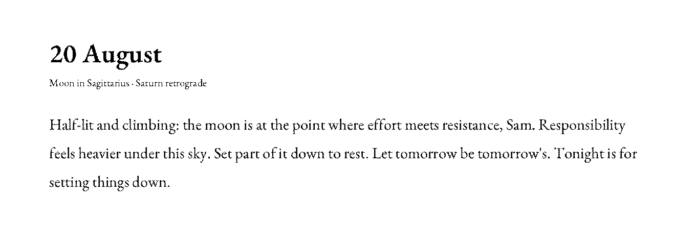
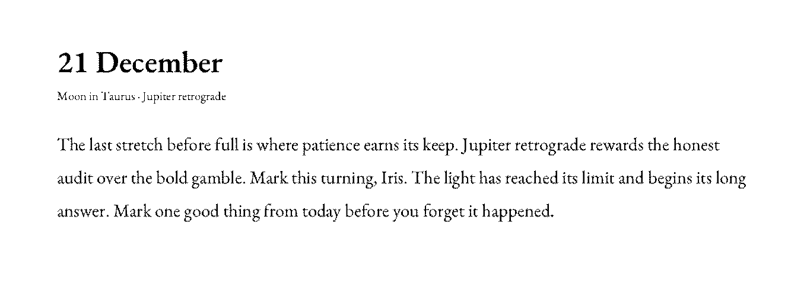

Every morning your almanac shows a single reading, drawn from the real position of the sky and the meaning tradition has long assigned to it. No guessing, no black box — just precise astronomy and a codified craft.
The promise
A reading is produced in three honest stages. First you tell us where and when you began. Then we compute the sky — yours at birth, and today's above it — to the precision professional astrologers use. Finally we translate those positions into words using tables of correspondence handed down through the tradition. There is no artificial intelligence in the writing. The same chart on the same day always yields the same reading — because it is derived, not invented.
Your name, the moment and place of your birth, and the stone you choose. This is everything needed to cast your chart — and nothing more.
An ephemeris fixes the Sun, Moon and planets to a fraction of a degree — your natal chart, and each day's transits to it.
Tables of correspondence turn the strongest transit of the day into language, following rules — not a random sentence generator.
Stage I · Onboarding
A birth chart is a photograph of the sky from one place, at one instant. To reproduce it we need the instant and the place precisely — the same details any astrologer would ask for.
Stage II · Computation
Positions come from an ephemeris — the same class of data (Swiss Ephemeris, derived from NASA/JPL) that professional software runs on. We precompute a table of daily positions spanning centuries and bake it into the device, so the almanac is accurate to a fraction of a degree with no connection required.
Your city gives the time zone and any historical daylight saving in force on that date. We convert to UT and then to a Julian Day, the continuous day-count astronomy uses.
For that instant we read the geocentric ecliptic longitude of the Sun, Moon and Mercury through Pluto (plus the lunar node), interpolated between table entries. A longitude of 0–360° places each body in a sign (30° each).
From the local sidereal time, the obliquity of the ecliptic and your latitude we compute the Ascendant — the degree rising on the eastern horizon — and the twelve house cusps that divide your chart into life areas.
The Sun–Moon elongation gives the phase and exact illuminated fraction. Comparing a planet's longitude across successive days tells us when it is retrograde — apparently moving backward.
Each morning we compare today's planetary longitudes to your natal ones. When the angle between them lands on a recognised aspect (0°, 60°, 90°, 120°, 180°) within a small tolerance — the orb — a transit is active.
Active transits are scored by tightness of orb and the weight of the planets involved. The single strongest becomes the seed of today's reading.
# Longitudes in degrees. A "square" is a 90° separation. sep = angular_distance(transit_planet.lon, natal_planet.lon) # 0–180° target = 90.0 # square orb = abs(sep - target) is_active = orb <= 6.0 # within tolerance strength = (6.0 - orb) * weight(transit_planet) * weight(natal_planet)
The numbers above are illustrative; production orbs follow the tradition (tighter for minor bodies, wider for luminaries) and are reviewed by a practitioner.
Stage III · Generation
The strongest transit is a precise astrological statement: transiting Saturn square natal Moon, in your 4th house. To voice it we consult tables of correspondence — the meanings the tradition assigns to each planet, sign, house and aspect — and assemble a sentence from fixed grammatical skeletons. Every word traces back to a rule and a source.
| Planet | Domain | Keywords |
|---|---|---|
| ☉ Sun | vitality, identity | purpose, confidence, warmth |
| ☽ Moon | feeling, home | mood, memory, care, instinct |
| ☿ Mercury | mind, exchange | speech, travel, learning, review |
| ♀ Venus | love, value | harmony, beauty, worth, pleasure |
| ♂ Mars | drive, action | courage, initiative, friction |
| ♃ Jupiter | growth, meaning | opportunity, faith, expansion |
| ♄ Saturn | structure, time | discipline, limit, endurance |
| Aspect | Angle | Nature | Tone it lends |
|---|---|---|---|
| Conjunction | 0° | fusion | intensity, beginning |
| Sextile | 60° | harmonious | opportunity, ease |
| Square | 90° | dynamic | friction that prompts growth |
| Trine | 120° | harmonious | flow, natural talent |
| Opposition | 180° | polarising | awareness through contrast |
| Stone | Traditional intention |
|---|---|
| Amethyst | calm and clear thinking |
| Rose quartz | gentleness toward self and others |
| Citrine | warmth and quiet confidence |
| Moonstone | intuition and new beginnings |
| Obsidian | grounding and honest reflection |
The planet, house and aspect chose the subject and the tone; the correspondence tables supplied the keywords; a fixed sentence skeleton supplied the grammar; a deterministic seed chose among equivalent phrasings so no two recent days repeat. The stone line comes straight from its correspondence row.


A word on honesty
The Oracle never claims to know the future, and never offers medical, financial or legal advice — a filter enforces this on every reading before it is shown. The astronomy is literally true; the meanings belong to a long human tradition of reading the sky as a mirror for reflection. We present it in that spirit: a considered, well-made prompt for the day — closer to a stoic maxim than a horoscope that pretends to foretell events.
Provenance
The computation rests on published astronomy; the interpretation on named, respected sources. The correspondence tables are reviewed by a practicing astrologer before they ship.
The device runs fully offline. Nothing about you is transmitted; your chart is computed once, at order, and lives only on your almanac.